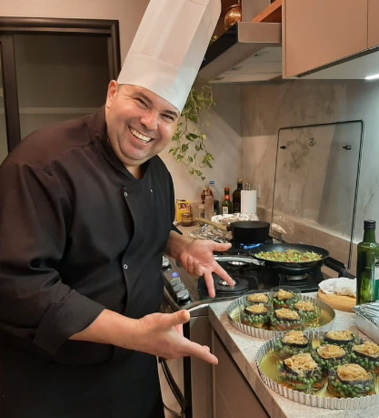

Com mais de 20 anos de experiência, o Chef Edmilson é um mestre da alta cozinha, especializado em criar experiências gastronômicas personalizadas para jantares privados, eventos corporativos e celebrações especiais. Sua paixão pela culinária e dedicação à excelência o tornam a escolha ideal para quem busca uma experiência culinária única e memorável em Sorocaba e região.
O Chef Edmilson é conhecido por sua habilidade em combinar ingredientes frescos e técnicas culinárias inovadoras para criar pratos que encantam tanto o paladar quanto a visão. Ele trabalha de perto com seus clientes para entender suas preferências e necessidades, garantindo que cada menu seja cuidadosamente elaborado para atender às expectativas e criar momentos inesquecíveis.
Além de sua expertise culinária, o Chef Edmilson é um profissional dedicado, comprometido em oferecer um serviço impecável e uma experiência gastronômica de alta qualidade. Seja para um jantar íntimo, um evento corporativo ou uma celebração especial, o Chef Edmilson está pronto para transformar sua ocasião em um evento culinário extraordinário.
